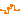
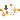
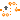
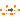
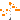

Library of sampler and hold blocks for Integer signals
This package contains blocks that mark boundaries of a clocked partition
and transform an Integer signal from one partition to the next. Especially,
the following blocks are provided:
| Boundary Type | Block Name | Description |
|---|---|---|
| continuous-time → clocked | Sample | Sample a continuous-time signal. |
| SampleClocked | Sample and associate a clock to the sampled scalar signal. | |
| SampleVectorizedAndClocked | Sample an input vector and associate a clock to the sampled vector signal. | |
| clocked → continuous-time | Hold | Hold a clocked signal with zero-order hold. |
| clocked → clocked | SubSample | Sub-sample a signal (output clock is slower as input clock). |
| SuperSample | Super-sample a signal (output clock is faster as input clock). | |
| ShiftSample | Shift a signal (output clock is delayed with respect to input clock). | |
| BackSample | Shift a signal and start the output clock before the input clock with a start value. | |
| within clocked partition | AssignClock | Assign a clock to a clocked scalar signal. |
| AssignClockVectorized | Assign a clock to a clocked vector signal. |
Additionally, package Utilities contains utility blocks that are used as building blocks for user-relevant blocks.
Extends from Modelica.Icons.Package (Icon for standard packages).
| Name | Description |
|---|---|
| Sample the continuous-time, Integer input signal and provide it as clocked output signal (clock is inferred) | |
| SampleClocked | Sample the continuous-time, Integer input signal and provide it as clocked output signal. The clock is provided as input signal |
| SampleVectorizedAndClocked | Sample the continuous-time, Integer input signal vector and provide it as clocked output signal vector. The clock is provided as input signal |
|  Hold | Hold the clocked, Integer input signal and provide it as continuous-time output signal (zero order hold) |
|  SubSample | Sub-sample the clocked Integer input signal and provide it as clocked output signal |
|  SuperSample | Super-sample the clocked Integer input signal and provide it as clocked output signal |
|  ShiftSample | Shift the clocked Integer input signal by a fraction of the last interval and provide it as clocked output signal |
| BackSample | Shift clock of Integer input signal backwards in time (and access the most recent value of the input at this new clock) |
|  AssignClock | Assign a clock to a clocked Integer signal |
| AssignClockVectorized | Assign a clock to a clocked Integer signal vector |
| Utility components that are usually not directly used |
 Modelica.Clocked.IntegerSignals.Sampler.Sample
Modelica.Clocked.IntegerSignals.Sampler.SampleSample the continuous-time, Integer input signal and provide it as clocked output signal (clock is inferred)
This block for Integer signals works similarly as the corresponding block for Real signals (see RealSignals.Sampler.Sample).
Analog to the corresponding Real signal block examples there exist two elementary examples, Sample1 and Sample2, for this Integer block.
Extends from Clocked.IntegerSignals.Interfaces.PartialSISOSampler (Basic block used for sampling of Integer signals).
| Name | Description |
|---|---|
| u | Connector of continuous-time, Real input signal |
| y | Connector of clocked, Real output signal |
Sample the continuous-time, Integer input signal and provide it as clocked output signal. The clock is provided as input signal
This block for Integer signals works similarly as the corresponding block for Real signals (see RealSignals.Sampler.SampleClocked).
Analog to the corresponding Real signal block example there exists an elementary example for this Integer block.
Extends from Clocked.IntegerSignals.Interfaces.SamplerIcon (Basic graphical layout of block used for of Integer signals).
| Name | Description |
|---|---|
| clock | Output signal y is associated with this clock input |
| u | Connector of continuous-time, Integer input signal |
| y | Connector of clocked, Integer output signal |
Sample the continuous-time, Integer input signal vector and provide it as clocked output signal vector. The clock is provided as input signal
This block for Integer signals works similarly as the corresponding block for Real signals (see RealSignals.Sampler.SampleVectorizedAndClocked).
Analog to the corresponding Real signal block example there exists an elementary example for this Integer block.
Extends from Clocked.IntegerSignals.Interfaces.SamplerIcon (Basic graphical layout of block used for of Integer signals).
| Name | Description |
|---|---|
| n | Size of input signal vector u (= size of output signal vector y) |
| Name | Description |
|---|---|
| u[n] | Connector of continuous-time, Integer input signal vector |
| y[n] | Connector of clocked, Integer output signal vector |
| clock | Output signal vector y is associated with this clock input |
Hold the clocked, Integer input signal and provide it as continuous-time output signal (zero order hold)
This block for Integer signals works similarly as the corresponding block for Real signals (see RealSignals.Sampler.Hold).
Analog to the corresponding Real signal block example there exists an elementary example for this Integer block.
Extends from Clocked.IntegerSignals.Interfaces.PartialSISOHold (Basic block used for zero order hold of Integer signals).
| Name | Description |
|---|---|
| y_start | Value of output y before the first tick of the clock associated to input u |
| Name | Description |
|---|---|
| u | Connector of clocked, Integer input signal |
| y | Connector of continuous-time, Integer output signal |
Sub-sample the clocked Integer input signal and provide it as clocked output signal
This block for Integer signals works similarly as the corresponding block for Real signals (see RealSignals.Sampler.SubSample).
Analog to the corresponding Real signal block example there exists an elementary example for this Integer block.
| Name | Description |
|---|---|
| inferFactor | = true, if sub-sampling factor is inferred |
| factor | Sub-sampling factor >= 1 (ignored if inferFactor=true) |
| Name | Description |
|---|---|
| u | Connector of clocked, Integer input signal |
| y | Connector of clocked, Integer output signal (clock of y is slower as clock of u) |
Super-sample the clocked Integer input signal and provide it as clocked output signal
This block for Integer signals works similarly as the corresponding block for Real signals (see RealSignals.Sampler.SuperSample).
Analog to the corresponding Real signal block example there exists an elementary example for this Integer block.
| Name | Description |
|---|---|
| inferFactor | = true, if super-sampling factor is inferred |
| factor | Super-sampling factor >= 1 (ignored if inferFactor=true) |
| Name | Description |
|---|---|
| u | Connector of clocked, Integer input signal |
| y | Connector of clocked, Integer output signal (clock of y is faster as clock of u) |
Shift the clocked Integer input signal by a fraction of the last interval and provide it as clocked output signal
This block for Integer signals works similarly as the corresponding block for Real signals (see RealSignals.Sampler.ShiftSample).
Analog to the corresponding Real signal block example there exists an elementary example for this Integer block.
| Name | Description |
|---|---|
| Shift first clock activation for 'shiftCounter/resolution*interval(u)' seconds | |
| shiftCounter | Numerator of shifting formula |
| resolution | Denominator of shifting formula |
| Name | Description |
|---|---|
| u | Connector of clocked, Integer input signal |
| y | Connector of clocked, Integer output signal |
Shift clock of Integer input signal backwards in time (and access the most recent value of the input at this new clock)
This block for Integer signals works similarly as the corresponding block for Real signals (see RealSignals.Sampler.BackSample).
Analog to the corresponding Real signal block example there exists an elementary example for this Integer block.
| Name | Description |
|---|---|
| y_start | Value of output y before the first clock tick of the input u |
| Shift first clock activation backwards in time for 'shiftCounter/resolution*interval(u)' seconds | |
| backCounter | Numerator of shifting formula |
| resolution | Denominator of shifting formula |
| Name | Description |
|---|---|
| u | Connector of clocked, Integer input signal |
| y | Connector of clocked, Integer output signal (clock of y is faster than clock of u) |
Assign a clock to a clocked Integer signal
This block for Integer signals works similarly as the corresponding block for Real signals (see RealSignals.Sampler.AssignClock).
Analog to the corresponding Real signal block example there exists an elementary example for this Integer block.
| Name | Description |
|---|---|
| u | Connector of clocked, Integer input signal |
| y | Connector of clocked, Integer output signal |
| clock |
Assign a clock to a clocked Integer signal vector
This block for Integer signals works similarly as the corresponding block for Real signals (see RealSignals.Sampler.AssignClockVectorized).
Analog to the corresponding Real signal block example there exists an elementary example for this Integer block.
| Name | Description |
|---|---|
| n | Size of input signal vector u (= size of output signal vector y) |
| Name | Description |
|---|---|
| u[n] | Connector of clocked, Integer input signal |
| y[n] | Connector of clocked, Integer output signal |
| clock |